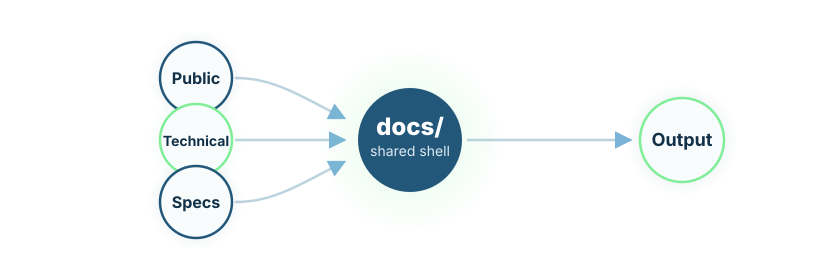

achilles_specs
Achilles-oriented runtime and coding-style guidance.
LydiaRX AG Documentation
This page explains how the public LydiaRX site, the technical pages, the DS specifications, and the imported local skill catalog fit together inside one static output.
The repository publishes its output from `docs/`. Public pages, technical pages, shared CSS, partials, assets, the DS set, and linked research article pages all live under that root so the result stays deployable without a separate build system.
The same output also supports selectable visual presentations. The
inspiration theme is now the default site presentation, while the corner
Dev Preview widget remains visible by default unless a stored override disables it.
Direct ?theme=fusion, ?theme=inspiration, and
?theme=default links still work, and the shared client-side layer
presents a browser-storage consent banner for persisted preferences. The default
inspiration presentation uses one shared helix-style point-field engine across its
selected white floors. The hero floor gives priority to larger right-weighted
double-helix structures with visible rungs, pulse highlights, strand particles, and
subtle pointer response, while the left reading side keeps only a veiled continuation
of the same field. Page, floor, and refresh-level randomisation still regenerate
different clustered starting states without changing animation families.
docs/*.html — public routes and technical documentation pages.docs/partials/ — shared header and footer fragments.docs/assets/ — static SVGs and reusable assets.docs/specs/ — DS files and the generated matrix.AGENTS.md — root agent guidance and current skill catalog.
The repository includes imported local skills used for bootstrap, review, and downstream agent workflows. They are repository tooling rather than public site pages.
Achilles-oriented runtime and coding-style guidance.
Portable baseline for self-contained Anthropic-style skills.
Article rebuild workflow for article-owned plans and assets.
Specification-driven conventions for C-Skills.
Dynamic code-generation skill conventions.
Bootstrap rules for AGENTS, DS files, documentation, and synchronization.
Orchestration-skill conventions for planner-style workflows.
Step-by-step DS review and reconciliation workflow.
Canonical rules for source layout, file size guidance, HTML structure, CSS ownership, and lightweight verification.
Open DS001Update obligations, specification authority, and delivery constraints for public and technical pages.
Open governance pageBrowse the complete specification set, including site vision, information architecture, visual system, and content governance.
Open DS matrix